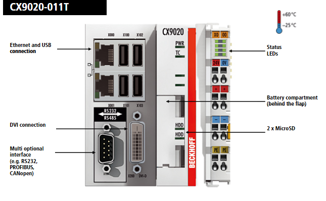
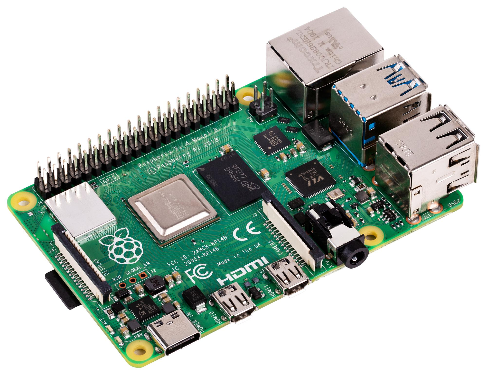

Een embedded systeem afgelijnd omschrijven is geen eenvoudige taak.
Enkele synoniemen voor embedded zijn: ingebed, ingesloten, ingebouwd en verankerd.
Met een embedded systeem wordt vaak een computer bedoeld die geprogrammeerd is om één specifieke taak uit te voeren.
Voor de komst van embedded systems werden deze taken uitgevoerd door ofwel mechanische systemen of (ingewikkelde) elektronische schakelingen.
Door het ontwikkelen van krachtigere processoren en bijgevolg snellere besturingssystemen, sneller en groter geheugen en uitgebreidere programmeeromgevingen is het makkelijker en goedkoper dan ooit om de logica die vroeger gebouwd werd in hardware te vertalen naar software.
We denken bijvoorbeeld aan de programmatuur in een wasmachine of een meet- en regelsysteem om een industrieel proces aan te sturen.
Vaak wordt met één of meerdere sensoren (waarnemen) informatie gewonnen uit de omgeving. Voorbeelden hiervan zijn een temperatuur, een vloeistofniveau, een toestand van een schakelaar, ... om er maar enkele op te noemen.
Het embedded system verwerkt deze impulsen aan de hand van een programma en communiceert deze eventueel naar andere systemen. Als laatste stap wordt er gereageerd op de toestand van het systeem en indien nodig bijgeregeld.
Dit alles moet vaak in real time worden uitgevoerd wat de behoefte schept voor het draaien van een real time operating system. Dit is een besturingssysteem dat kan garanderen dat bepaalde taken binnen een zekere tijd afgehandeld kunnen worden.
Voor x86 of x64 processoren is dit vaak Windows 7 Embedded en Windows 11 IoT Long Term Servicing Channel. Voor ARM processoren kan gekozen worden voor Windows Embedded Compact 7 en Linux.
Het embedded system dat wij in het labo zullen gebruiken is de Raspberry Pi.
